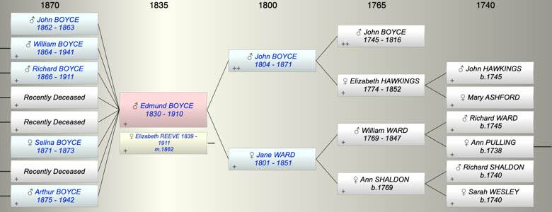

| [Index] |
| Edmund William John BOYCE (1830 - 1910) |
| watchmaker/jeweller |
|  |

|
| b. 06 Dec 1830 at Shaldon, Devon |
| m. 1862 Elizabeth REEVE (1839 - 1911) |
| d. 1910 aged 80 |
| Near Relatives of Edmund William John BOYCE (1830 - 1910) | ||||||
| Relationship | Person | Born | Birth Place | Died | Death Place | Age |
| Grandfather | John BOYCE | 1745 | 1816 | Torquay | 71 | |
| Grandmother | Elizabeth HAWKINGS | 1774 | Diptford, Devon | 13 Aug 1852 | 78 | |
| Grandfather | William Coas WARD | 1769 | Wolborough, Devon | 1847 | 78 | |
| Grandmother | Ann SHALDON | 1769 | E. Teignmouth | |||
| Father in Law | Richard REEVE | 1817 | Hittisleigh, Devon | Y | ||
| Mother in Law | Selina BREWER | 1818 | Exminster | 1899 | 81 | |
| Father | John BOYCE | 20 Jul 1804 | Cockington, Devon | 19 Dec 1871 | Teignmouth, Devon | 67 |
| Mother | Jane WARD | 1801 | 27 Jan 1851 | 50 | ||
| Self | Edmund William John BOYCE | 06 Dec 1830 | Shaldon, Devon | 1910 | 80 | |
| Wife | Elizabeth REEVE | 1839 | Heavitree/Wonford, Devon | 25 Jun 1911 | Bath | 72 |
| Son | John Richard Edmund BOYCE | 1862 | Exmouth | 1863 | Exmouth | 1 |
| Son | William Edmund BOYCE | 18 Jun 1864 | Exmouth? | 21 Jun 1941 | Exmouth | 77 |
| Son | Richard John BOYCE | 1866 | Exmouth | 11 May 1911 | 45 | |
| Son | Living or Recently Deceased | |||||
| Daughter | Living or Recently Deceased | |||||
| Daughter | Selina Elizabeth BOYCE | 1871 | Exmouth? | 1873 | Exmouth? | 2 |
| Daughter | Living or Recently Deceased | |||||
| Son | Arthur BOYCE | 07 Jul 1875 | Exmouth | 07 Jan 1942 | Looe | 66 |
| Sister | Sarah Jane BOYCE | 05 Jan 1829 | Shaldon | 1873 | 44 | |
| Brother | Arthur BOYCE | 30 Jan 1833 | Shaldon, Devon | 14 Oct 1896 | 63 | |
| Sister | Maria BOYCE | 30 Jan 1834 | Shaldon | 1913 | 79 | |
| Brother | William Ward BOYCE | 17 Oct 1836 | Shaldon, Devon | 20 Apr 1920 | 83 | |
| Sister | Ann Ward BOYCE | 15 Mar 1838 | Shaldon, Devon | 1917 | 79 | |
| Sister | Harriett Jane BOYCE | 21 Nov 1840 | Shaldon, Devon | 1920 | Wolverhampton | 80 |
| Brother | John Hawkings BOYCE | 20 Nov 1842 | Shaldon/Teignmouth | 14 Oct 1895 | Mortonhampstead | 52 |
| Daughter in Law | Ellen Rebecca HORE | 1865 | Exmouth | 23 Aug 1934 | Exmouth | 69 |
| Daughter in Law | Margaret Elizabeth ABRAHAM | 28 Feb 1866 | Marchwood, Hampshire | Y | ||
| Daughter in Law | Florence MATRAVERS | 08 Sep 1867 | South Petherton, Somerset | 1942 | 75 | |
| Son in Law | Living or Recently Deceased | |||||
| Son in Law | William Thomas LORAM | 1875 | Bath | 1927 | Bradford on Avon | 52 |
| Daughter in Law | Living or Recently Deceased | |||||
| Grandson | Living or Recently Deceased | |||||
| Grandson | John Reginald BOYCE | 1895 | Exmouth | 10 May 1916 | 21 | |
| Granddaughter | Living or Recently Deceased | |||||
| Grandson | Living or Recently Deceased | |||||
| Grandson | Living or Recently Deceased | |||||
| Granddaughter | Dorothy Elizabeth BOYCE | 1892 | Sudbury, Suffolk | 08 Nov 1918 | Sudbury, Suffolk | 26 |
| Granddaughter | Living or Recently Deceased | |||||
| Granddaughter | Living or Recently Deceased | |||||
| Granddaughter | Florence Maud BOYCE | 1893 | Durston, Somerset | 1924 | registered Bridgwater Dec 1927 5c 352 aged 33 | 31 |
| Granddaughter | Selina Elizabeth BOYCE | 18 Dec 1894 | Coombe West, Somerset | Y | ||
| Grandson | Living or Recently Deceased | |||||
| Grandson | Living or Recently Deceased | |||||
| Grandson | Edmund Henry SEARLE | 1896 | Exmouth | |||
| Granddaughter | Living or Recently Deceased | |||||
| Grandson | Living or Recently Deceased | |||||
| Granddaughter | NO CHILDREN | |||||
| Aunt | Elizabeth BOYCE | 13 Feb 1803 | Cockington, Devon | 1845 | Tormorham | 42 |
| Uncle | John PERRING | 1800 | Y | |||
| Aunt | Mary BOYCE | 1806 | Cockington, Devon | 06 May 1806 | Buried Cockington Died an infant | 0 |
| Aunt | Ann BOYCE | 05 Apr 1807 | Cockington, Devon | 1873 | 66 | |
| Aunt | Ann WARD | abt 1789 | East Teignmouth | 1874 | 85 | |
| Uncle | Andrew DENLEY | abt 1783 | Kingskerwell | 1858 | 75 | |
| Uncle | William WARD | 1790 | 1878 | 88 | ||
| Aunt | Sarah WARD | 1793 | West Teignmouth | 1871 | 78 | |
| Cousin | Ann Ward DENLEY | abt 1822 | Shaldon | 1891 | 69 | |
| Cousin | Sarah Jane DENLEY | abt 1824 | Shaldon | |||
| Cousin | William Ward DENLEY | 1827 | Shaldon | |||
| Cousin | John DENLEY | 1831 | Shaldon | 1918 | 87 | |
| Cousin | Henry DENLEY | 1833 | Shaldon | 1881 | 48 | |
| Niece | Elizabeth Jane BOYCE | 1858 | West Teignmouth | 17 Oct 1932 | Plymouth | 74 |
| Niece | Harriett Ellen BOYCE | 1863 | 1867 | 4 | ||
| Niece | Annie Frances BOYCE | 1868 | West Teignmouth | 07 Apr 1903 | Plymouth | 35 |
| Nephew | Arthur John George BOYCE | 13 Sep 1870 | Exeter Rd West Teignmouth | 01 Mar 1922 | 51 | |
| Niece | Living or Recently Deceased | |||||
| Niece | Living or Recently Deceased | |||||
| Nephew | Living or Recently Deceased | |||||
| Niece | Living or Recently Deceased | |||||
| Nephew | Living or Recently Deceased | |||||
| Nephew | Harry James PARSONS | 1870 | Wolverhampton | 1915 | 45 | |
| Niece | Living or Recently Deceased | |||||
| Niece | Eva Jane PARSONS | 1878 | Wolverhampton | 1900 | Wolverhampton | 22 |
| Nephew | Living or Recently Deceased | |||||
| Niece | Edith BOYCE | 10 Jul 1880 | 1917 | 37 | ||
| Nephew | John BOYCE | 1883 | St Thomas | 1884 | Mortonhampstead? | 1 |
| Nephew | Living or Recently Deceased | |||||
| Nephew | Edgar BOYCE | 1887 | Mortonhampstead | Feb 1887 | 0 | |
| Nephew | William Edmund BOYCE | 1888 | Mar 1900 | 12 | ||
| Niece | Living or Recently Deceased | |||||
| Brother in Law | William Henry REEVE | 1837 | Heavitree | 1917 | 80 | |
| Brother in Law | Albert Henry TAYLOR | 1832 | 1878 | 46 | ||
| Sister in Law | Mary Jane Clark(E) | 08 Jun 1831 | Kenton, Devon | 1874 | Teignmouth? | 43 |
| Sister in Law | Florence Hook COLE | 1842 | Shaldon, Devon | 27 Feb 1935 | Devon | 93 |
| Brother in Law | George PAYNE | 1843 | Teignmouth | |||
| Brother in Law | Charles Albert H S PARSONS | abt 1839 | Wolverhampton | 1915 | Wolverhampton | 76 |
| Sister in Law | Living or Recently Deceased | |||||
| Events in Edmund William John BOYCE (1830 - 1910)'s life | |||||
| Date | Age | Event | Place | Notes | Src |
| watchmaker/jeweller | |||||
| 06 Dec 1830 | Edmund William John BOYCE was born | Shaldon, Devon | Note 1 | ||
| 27 Jan 1851 | 20 | Death of mother Jane WARD (aged 50) | Note 2 | ||
| 1862 | 32 | Birth of son John Richard Edmund BOYCE | Exmouth | Note 3 | |
| 1862 | 32 | Married Elizabeth REEVE (aged 23) | Note 4 | ||
| 1863 | 33 | Death of son John Richard Edmund BOYCE (aged 1) | Exmouth | Note 5 | |
| 18 Jun 1864 | 33 | Birth of son William Edmund BOYCE | Exmouth? | Note 6 | |
| 1866 | 36 | Birth of son Richard John BOYCE | Exmouth | Note 7 | |
| 1871 | 41 | Birth of daughter Selina Elizabeth BOYCE | Exmouth? | Note 8 | |
| 19 Dec 1871 | 41 | Death of father John BOYCE (aged 67) | Teignmouth, Devon | Note 9 | |
| 1873 | 43 | Death of daughter Selina Elizabeth BOYCE (aged 2) | Exmouth? | Note 10 | |
| 07 Jul 1875 | 44 | Birth of son Arthur BOYCE | Exmouth | Note 11 | |
| 1910 | 80 | Edmund William John BOYCE died | Note 12 | ||
| Personal Notes: |
|
1861 census living alone at The Strand, Exmouth, unmarried, 28, watchmaker (finisher), born Shaldon. He is clearly recorded as Edward.
1862 Married Elizabeth Reeve (born about 1839 Heavitree/Wonford). The marriage was registered at St Thomas March 1862 5b 96. 1871 census Edmund and his family were living in The Strand, Littleham (Exmouth). Edmund was given as 39, born Shaldon and a watchmaker. His wife was 30 (32?) and born Exeter. Their children (all born in Exmouth) were: William 6, Richard 4, Henry 3, Florence J and Selina E, both one month old. John Hawkings Boyce, brother of Edmund, was living with them and there were two servants - one was Besty? Hill, 16, born Exmouth, who I think later married John Hawkings Boyce. 1881 census Edmund and his wife still living at 20, The Strand, Littleham (Exmouth). Edmund was given as aged 49 and his wife as aged 42. The address tallies with Ponsford who describes Edmund Boyce as operating his business from 20, The Strand, Exmouth. The rest of the family were: William 16, Richard 14, Henry 12, Florence 10, Maud 8 and Arthur 6. Two others were included in the household: Jane Holwill aged 20, born Budleigh (servant) and Selina Reeves a 63 old widow (and mother in law to Edmund) who was born in Exminster. Maud and Arthur had been born since 1871 but Florence's twin Selina Elizabeth had died. 1891 census - the two eldest sons William and Richard had left home. The rest of the family were still at 20, The Strand. Edmund was 60 - jeweller/goldsmith, his wife Elizabeth was 50. Henry, 23, was a grocer's assistant; Florence (Florie) was 19; Maud,18, was a milliner's apprentice: Arthur,16, was a scholar. Selina Reeve was still living with them (by now she would be 73). She was described as a retired cook. 1901 census Edmund was aged 70 (born in Shaldon) and still living at 20 The Strand, Littleham (Exmouth) as a watchmaker. His wife, Elizabeth, was aged 61 but her birthplace was given as Wonford rather than Heavitree. Their daughter Maud aged 28 (born Exmouth) was still living at home. Other members of the household were: George Boyce, nephew, aged 20 (born in Withycombe, Devon) a watchmaker. He must be the son of Edmund's brother, John Hawkings Boyce (who had died in 1895); and Mabel Wannel aged 19, servant, single and born in Topsham. Their other children had left home. He died in 1910 aged 79 registered St Thomas Dec 1910 5b 25 |
| Created on a Mac™ using iFamily for Mac™ on 15 Sep 2023 |